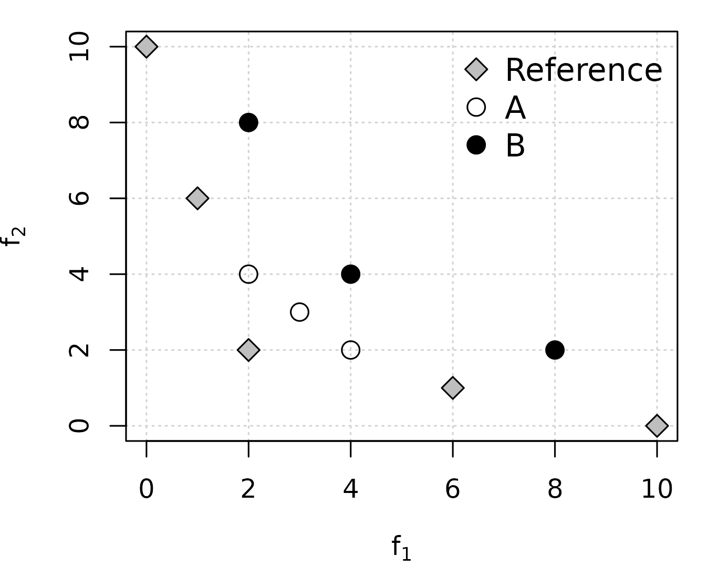

Several examples of computing multi-objective unary quality metrics.
library(moocore)
library(dplyr, warn.conflicts=FALSE)
get_dataset <- function(filename)
read_datasets(system.file(file.path("extdata", filename),
package = "moocore", mustWork = TRUE))
apply_within_sets <- function(x, sets, FUN, ...) {
FUN <- match.fun(FUN)
sapply(X = split.data.frame(x, sets), FUN = FUN, ...)
}Comparing two multi-objective datasets using unary quality metrics
First, read the datasets:
spherical <- get_dataset("spherical-250-10-3d.txt")
uniform <- get_dataset("uniform-250-10-3d.txt")
spherical_objs <- spherical[, -ncol(spherical)]
spherical_sets <- spherical[, ncol(spherical)]
uniform_objs <- uniform[, -ncol(uniform)] / 10
uniform_sets <- uniform[, ncol(uniform)]Create reference set and reference point:
ref_set <- filter_dominated(rbind(spherical_objs, uniform_objs))
ref_point <- 1.1Calculate metrics:
uniform_igd_plus <- apply_within_sets(uniform_objs, uniform_sets,
igd_plus, ref = ref_set)
spherical_igd_plus <- apply_within_sets(spherical_objs, spherical_sets,
igd_plus, ref = ref_set)
uniform_epsilon <- apply_within_sets(uniform_objs, uniform_sets,
epsilon_mult, ref = ref_set)
spherical_epsilon <- apply_within_sets(spherical_objs, spherical_sets,
epsilon_mult, ref = ref_set)
uniform_hypervolume <- apply_within_sets(uniform_objs, uniform_sets,
hypervolume, ref = ref_point)
spherical_hypervolume <- apply_within_sets(spherical_objs, spherical_sets,
hypervolume, ref = ref_point)
knitr::kable(data.frame(
Uniform = c(mean(uniform_hypervolume), mean(uniform_igd_plus),
mean(uniform_epsilon)),
Spherical = c(mean(spherical_hypervolume), mean(spherical_igd_plus),
mean(spherical_epsilon)),
row.names = c("Mean HV","Mean IGD+","Mean eps*")), format = "html") %>%
kableExtra::kable_styling(position = "center",
bootstrap_options = c("striped", "condensed", "responsive"))| Uniform | Spherical | |
|---|---|---|
| Mean HV | 0.7868862 | 0.7328974 |
| Mean IGD+ | 0.1238303 | 0.1574521 |
| Mean eps* | 623.2775539 | 225.9158914 |
IGD and Average Hausdorff are not Pareto-compliant
Example 4 by Ishibuchi et al. (2015) shows a case where IGD gives the wrong answer:
ref <- matrix(c(10, 0, 6, 1, 2, 2, 1, 6, 0, 10), ncol = 2, byrow=TRUE)
A <- matrix(c(4, 2, 3, 3, 2, 4), ncol = 2, byrow=TRUE)
B <- matrix(c(8, 2, 4, 4, 2, 8), ncol = 2, byrow=TRUE)
par(mar = c(4, 4, 1, 1)) # Reduce empty margins
plot(ref, xlab=expression(f[1]), ylab=expression(f[2]),
panel.first=grid(nx=NULL), pch=23, bg="gray", cex=1.5)
points(A, pch=1, cex=1.5)
points(B, pch=19, cex=1.5)
legend("topright", legend=c("Reference", "A", "B"), pch=c(23,1,19),
pt.bg="gray", bg="white", bty = "n", pt.cex=1.5, cex=1.2)
Assuming minimization of both objectives,
is better than
in terms of Pareto optimality. However, both igd() and
avg_hausdorff_dist() incorrectly measure
as better than
,
whereas r2_exact(), igd_plus() and
hypervolume() correctly measure
as better than
(remember that hypervolume must be maximized) and
epsilon_additive() measures both as equally good (epsilon
is weakly Pareto compliant).
knitr::kable(
data.frame(
A = c(
igd(A, ref),
avg_hausdorff_dist(A, ref),
igd_plus(A, ref),
epsilon_additive(A, ref),
hypervolume(A, ref=10),
r2_exact(A, ref=0)),
B = c(
igd(B, ref),
avg_hausdorff_dist(B, ref),
igd_plus(B, ref),
epsilon_additive(B, ref),
hypervolume(B, ref=10),
r2_exact(B, ref=0)),
row.names=c("IGD", "Hausdorff", "IGD+", "eps+", "HV", "Exact R2")), format = "html") %>%
kableExtra::kable_styling(position = "center",
bootstrap_options = c("striped", "condensed", "responsive"))| A | B | |
|---|---|---|
| IGD | 3.707092 | 2.591483 |
| Hausdorff | 3.707092 | 2.591483 |
| IGD+ | 1.482843 | 2.260113 |
| eps+ | 2.000000 | 2.000000 |
| HV | 61.000000 | 44.000000 |
| Exact R2 | 1.630952 | 2.066667 |
References
Ishibuchi, Hisao, Hiroyuki Masuda, Yuki Tanigaki, and Yusuke Nojima.
2015. “Modified Distance Calculation in Generational Distance and
Inverted Generational Distance.” In Evolutionary
Multi-Criterion Optimization, EMO 2015 Part I, edited
by António Gaspar-Cunha, Carlos Henggeler Antunes, and Carlos A. Coello
Coello, 9018:110–25. Lecture Notes in Computer Science. Heidelberg,
Germany: Springer.